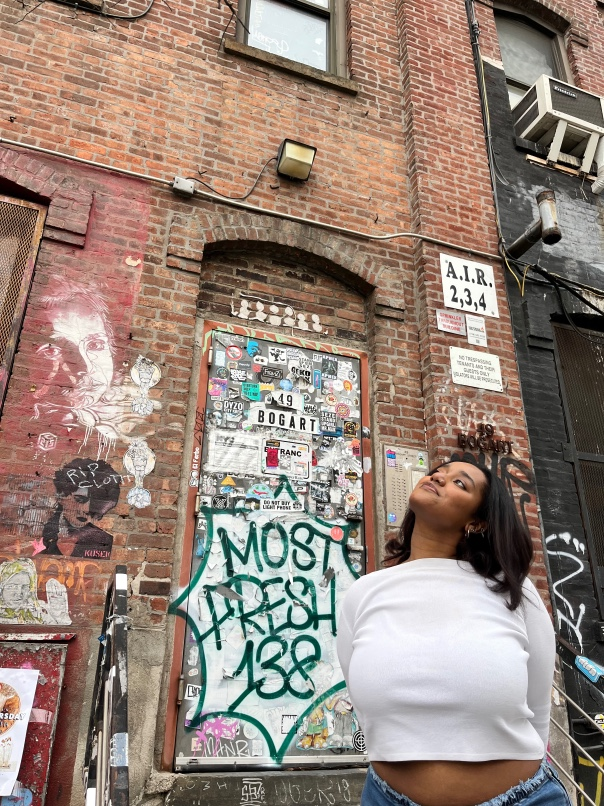

Hello, My name is Obsa Temesgen, a second year data analytics major aspiring to specialize in business analytics. Being on this path has me both nervous and excited. I'm excited because I’m learning so many new and cool things that I can apply anywhere but I’m nervous because it’s a very difficult major and I’m lacking just a little confidence. The one thing that keeps me pushing despite whatever worries I might have is the belief that everyone has the capacity to learn and do whatever they want to do. My father had always told me this was one of my strong suits, my ability to learn anything new if I put in the effort. I believe that the past year has helped me to better understand the actions I need to take to pursue this career goal, and I can't wait to implement them this semester and every one after that. Below I've included some information about me including some favorite drinks and some interesting facts.
| Fact 1 | Fact 2 | Fact 3 | Fact 4 |
|---|---|---|---|
| Height | Age | Where have you lived? | Interesting Fact |
| 5'8.5 | 20 | Ethiopia D.C Maryland Minnesota Ohio | I have a twin sister |
This is a link. You can click on it.
Friv